Claude Opus 5.5 使用指南：怎样让 Claude 更好地完成任务？
大家好，我是小林。
最近看到 Anthropic 发了一份 Opus 5.5 使用手册，叫《如何在 Claude 和 Claude Code 中用好 Opus 5.5》。
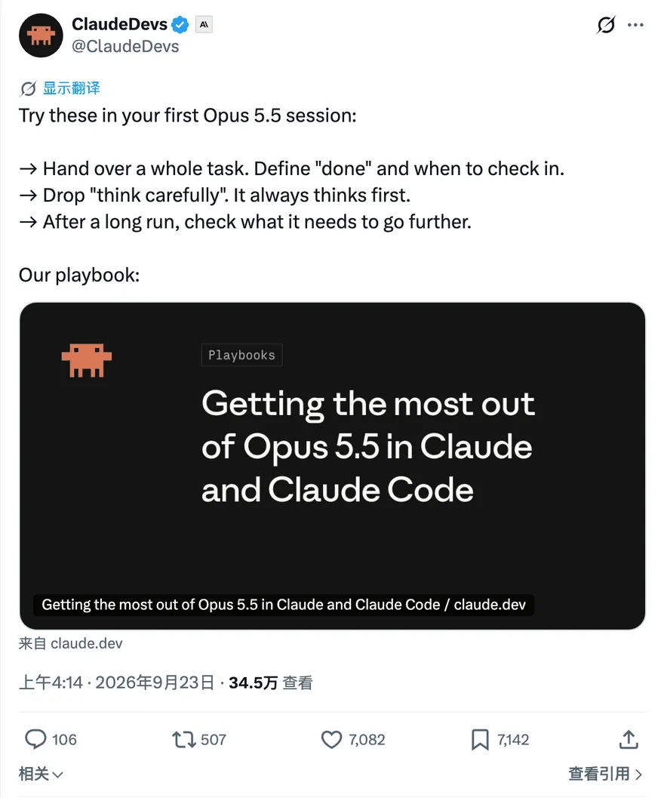
ClaudeDevs 发布 Opus 5.5 使用手册的帖子
里面有条建议挺有意思，让你把提示词里的「仔细思考」删掉。
连这句也要删？按手册的说法，Opus 5.5 每次回复前就会思考，用不着再叮嘱一遍。
除了怎么写提示词，手册还聊了几个很实际的问题。长任务怎么交给 Claude？干到一半老停下来怎么办？最后交上来的东西又该怎么看？
手册给的建议很直接。把完整任务交出去，说明做到什么程度算完成、什么时候需要来问你，少写「仔细思考」这类叮嘱。等长任务结束，先看哪些事情还在等你处理。
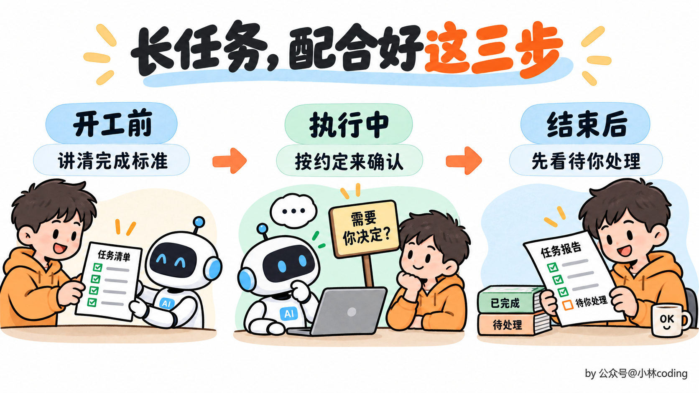
长任务的三个协作阶段
一、需求到底怎么说，Claude 才好干活？
假设你要换掉项目里的旧短信 SDK，只说一句「帮我升级一下」，改完依赖版本算不算完成？所有发送入口都要改吗？历史调用方式还要不要兼容？这些没说清，模型就得边做边猜。
可以把需求写得具体一点，比如这样。
把项目中的短信发送功能迁移到新版 SDK。
所有发送入口都要完成迁移，清理旧依赖，现有测试通过。
如果新版无法兼容现有业务行为，先说明差异，等我决定。
你看，这几句交代了任务、完成标准和需要你介入的情况。接下来查哪些文件、先改哪个入口，就交给 Claude Code 根据仓库情况判断。
「完成」最好是能检查的，别只写一个「做好」。 否则它觉得依赖升完了，你觉得业务还没验过，两边说的根本不是同一件事。
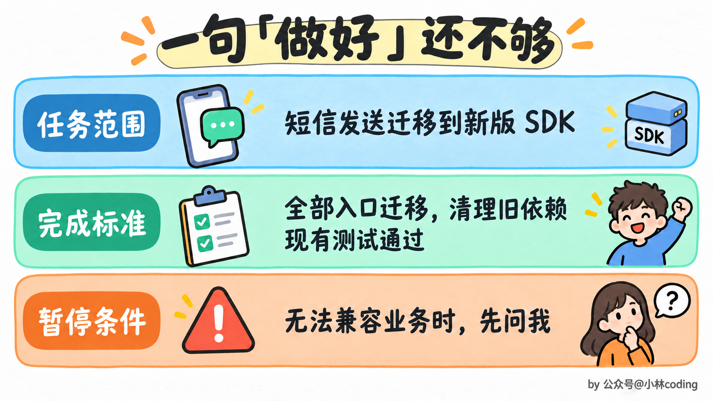
短信 SDK 迁移提示词的三个要素
需求写完，你是不是还想在结尾补一句「请仔细思考」？以前写 prompt，仿佛不加这句，心里就没底。
Opus 5.5 已经会先思考再回答。官方在聊天产品里试过，去掉这类叮嘱，回复能更早开始，质量也没见明显下降。你自己的任务会有什么变化，可以删掉以后对照着试一轮。
对了，保存下来的固定指令也翻一遍。比如 CLAUDE.md 里如果还留着「仔细思考」「一步一步想」这类叮嘱，也一起清理，别只改眼前这一条 prompt。
看到这里，你可能会问，那复杂问题，我还是想让模型多想一会怎么办？
在 Claude Code 里，可以通过 effort 设置，调整模型在思考上投入的精力。简单问题想快点拿到答案，直接说「直接回答」就好。
删除思考叮嘱，按需调整 effort
需求发出去了，才想起漏说一件事怎么办？比如代码已经改到一半，你突然想起，老的调用方式还得兼容。
可以在 Claude Code 执行过程中，直接输入补充要求并按回车。任务越长，重新开一轮的成本越高，发现遗漏就及时说，没必要憋到最后交卷才指出来。
如果让 Claude 做页面，要求也得具体。光说「别太模板化」，出来的结果可能只是换了套配色，熟悉的味道还是扑面而来。
手册建议，把你不喜欢的具体样式点出来。比如「不用米白背景，标题不要斜体强调词，按钮不要全做成胶囊形」。出第一版后，再针对实际效果补充要求。
「高级一点」留给模型的猜测空间太大。把自己看不顺眼的地方说清楚，后续才好改。
把不喜欢的页面样式指出来
二、长任务，怎么避免干一半就停？
需求交代清楚了，Claude 干了一半，突然给你一段汇报，结尾来一句「接下来可以修改剩余文件，需要我继续吗？」
当然继续啊，活还没干完呢。
如果经常碰到这种停顿，可以把工作规矩写进 CLAUDE.md。按手册的建议，结合自己的项目，写成类似这样。
范围内还有能推进的工作，就继续执行，汇报进度时也接着做下一步。
确实缺少我的决定或资料，导致无法推进时，再停下来说明。
删除数据、强推代码、修改仓库之外的内容之前，先征求确认。
看到这里，你可能想，干脆加一句「没做完就别停」，不就省事了？
普通的查文件、改代码，可以继续往下做。可要是下一步准备删除数据、强推代码呢？这种时候，你大概还是希望 Claude 先问一句。所以，该继续的事和该停的事，要一起讲清楚。 危险操作的权限确认也得保留，提示词里的约定不能代替权限设置。
长任务何时继续，何时暂停
如果只是停下来问「要不要继续」，回一句「继续」就行。经常这样的话，就得看看 Claude Code 为什么停下来。确实缺少信息，就把信息补上。如果只是汇报一下进度，就在 CLAUDE.md 里说明，汇报完继续做，不用每次等你点头。
如果你喜欢边看边改，也可以换个约定，让 Claude Code 动手前先用一句话说说计划，做完后再简短回顾。把这种偏好写进 CLAUDE.md 就好。
遇到要同时排查多个服务的任务，还可以让主 Agent 把工作拆给几个子 Agent。比如订单、库存、支付各分一个，分别查完，再汇总结果。
几个子 Agent 都查完了，也都说「没问题」，这下能放心了吗？
先看看这个「没问题」是怎么得出来的。每个 Agent 查了哪些代码、依据是什么，都得交代清楚，主 Agent 收到结果后也要核查。否则你只是多收到了几份结论，真要追问哪里查过了，还是说不清。
比如你怀疑几个服务都有重试次数失控的问题，明明设置了最多重试三次，实际却一直在发同一个请求，就可以让子 Agent 分别去查。
订单、库存、支付服务各分给一个子 Agent，检查请求失败后的重试次数是否超过配置上限。
每个结果附上重试上限、调用路径和触发条件，找不到证据就明确说明。
你核对结果后，再汇总成表，列出服务、是否受影响及依据。
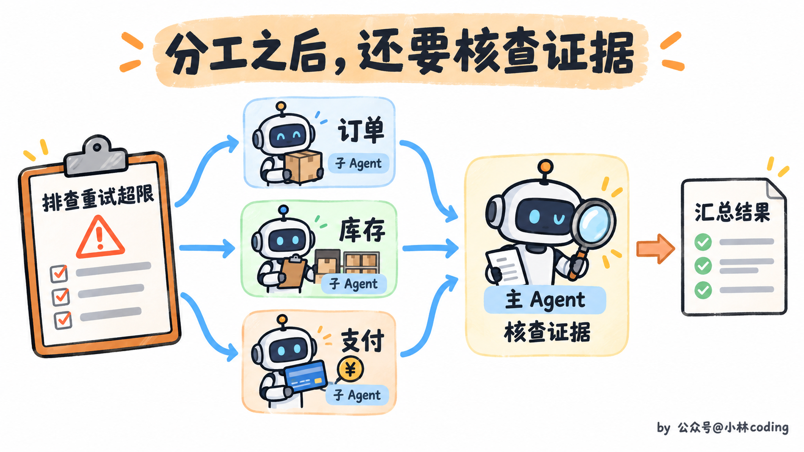
子 Agent 分工后由主 Agent 核查证据
任务和进度，聊天记录里不是都有吗？为什么还要专门写一份 TASKS.md？
问题就在于，长任务跑起来以后，对话里会不断塞进代码、日志和工具结果。上下文接近上限时，旧内容会被压缩，最早交代的细节就可能不再完整。
所以，可以让 Claude Code 把待办写进 TASKS.md，完成一项就更新，发现新问题也补进去。接着往下做时，先让它读一遍这份清单，知道哪些已经做完、哪些还没动、哪些在等你决定。
你想检查进度时，也不用再翻几十屏聊天记录。
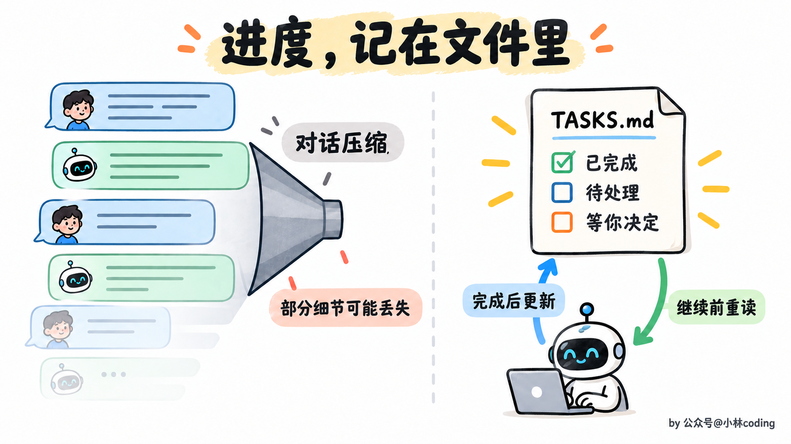
用 TASKS.md 保存并更新任务进度
三、Claude 说做完了，你先看什么？
跑了很久，终于交来一份汇报，你是不是会先看「完成了哪些工作」？
不妨先找找，有没有什么事还在等你决定。比如缺一份资料，或者有个方案需要你拍板。这些问题要是藏在长篇总结的末尾，你看了半天，才发现接下来该自己接手了。
所以，可以把汇报格式也写进 CLAUDE.md，约定每次结束时分成「待你处理」「已完成」「新发现」三部分。把需要你处理的事理清楚，再看看 Claude 交上来的结果，到底靠不靠谱。
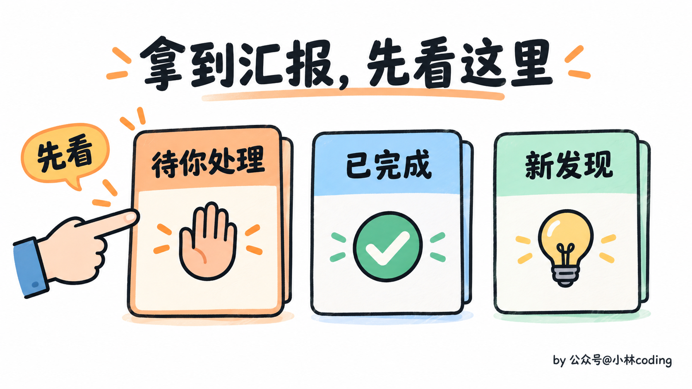
汇报先看待你处理，再看已完成和新发现
比如代码改完了，还得检查有没有带出新的问题。可以让 Claude Code 先审一轮，再交给人看，提示词可以这样写。
对照 main 分支，审查当前分支的代码变更。
只列出你认为必须修复后才能合并的问题。
每条写清文件名和行号、什么情况下会出错、原因是什么，以及怎样复现。
「这段可能有问题」还不够，得给出能查下去的具体线索。
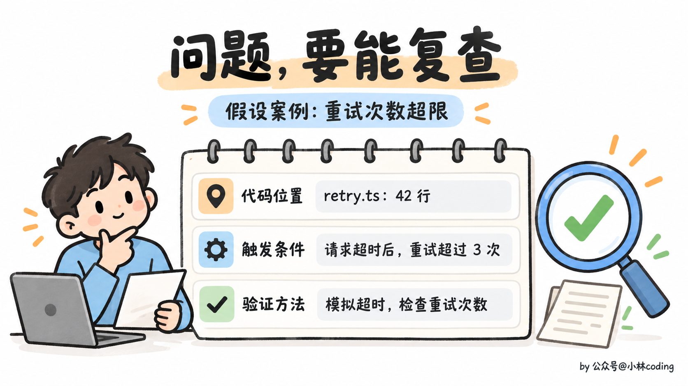
代码审查要给出位置、触发条件和验证方法
如果交上来的是调研报告，道理也一样。哪些结论有依据，哪些还没查实，报告里要分开写，没查实的再说明已经找过哪里。
这样你才能分清哪些可以采用，哪些还得补查。报告排得再漂亮，一个没有确认的关键数字，也足够让后面的判断跟着跑偏。
四、在 Claude 应用里，怎么用得更顺手？
如果你平时主要在 Claude 网页端、桌面端里聊天，下面这几条也值得试试。先看一眼模型选择器，确认选的是 Opus 5.5。
看架构图、报表或截图，直接把原图发过去，再问具体问题。比如「哪些服务直接调用了支付接口」，比自己把方框、箭头描述一遍省事，也保留了位置关系。
这一代对图表细节和位置关系的理解有所改进，图里的箭头连着谁、哪个数字属于哪一栏，都可以直接问 Claude。
图表之外，长文档也可以交给它检查。比如一份方案改了几轮，前面写项目 10 月上线，最后一页还留着 9 月，自己从头翻一遍，真不一定能发现。
提要求时就说清楚，要查日期、数字、名称有没有前后打架。发现问题，把有矛盾的原句摘出来，再标上段落或页码。这样你拿着原句就能回去核对，比一句「帮我看看」更有着落。
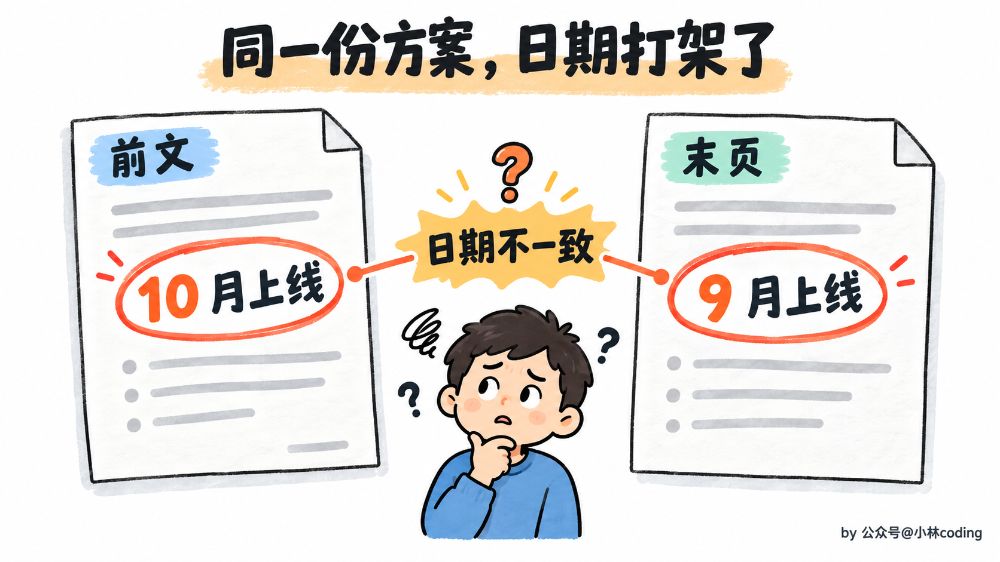
检查长文档里前后矛盾的上线日期
看完现有材料，还想整理一份表格发给同事？那就明确说要一份文件，把文件格式、列名和每行代表什么说清楚。比如把项目清单整理成 Excel，按负责人和截止日期排列，交付后你就能直接打开检查。
对了，聊得久了，Opus 5.5 有时会重新琢磨前面已经回答过的问题，后续回复因此变慢。
如果只是日常跟进，可以在 Claude 项目的指令里加上这段约定。
已经回答清楚的问题，先沿用之前的答案。
优先处理我当前的问题，除非我再次问起或指出问题，否则不用重新分析旧答案。
不过你可能也想到了，后面找到了新材料，发现前面判断错了，难道也不回头看？
这种情况当然得复查。所以，正在做长篇分析，就先别加这条约定。新材料可能改变前面的判断，这时回头检查，才是在把问题想完整。
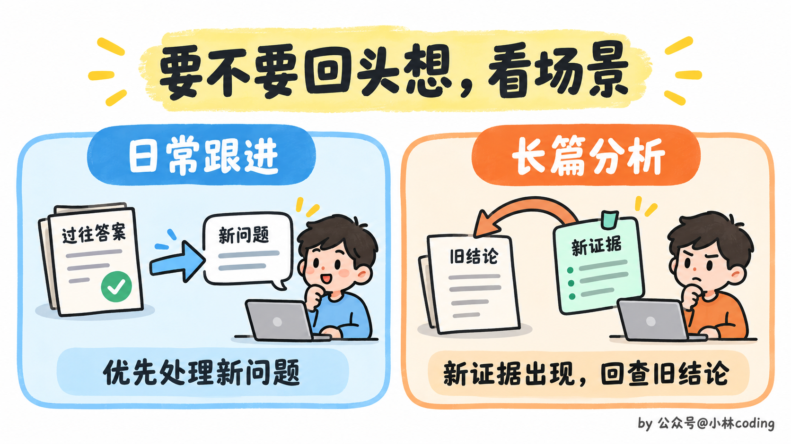
日常跟进和长篇分析采用不同的回查方式
五、聊着聊着，怎么换模型了？
你明明选的是 Opus 5.5，聊着聊着，怎么变成旧模型了？
有些内容触发安全检查后，可能会切换模型，正常请求也有可能被误判。手册明确说，查找源码里的安全漏洞是允许的，日常健康和教育问题也应当能正常处理。
而且检查范围不只有你刚发的那句话，前面的消息、文件和搜索结果也算。所以别光盯着最后一句找原因。
在 Claude 应用里，看到「Switched to」和旧模型名称，就说明发生了切换，后续对话也会继续用那个模型。
那我在模型选择器里选回 Opus 5.5，不就好了？
可以重新选，但还有个地方容易忽略。之前触发安全检查的内容，可能还留在这段对话里，所以切回去以后，也可能再次遇到模型切换。如果你认为正常请求被误判了，可以试着新开一个对话，再提出需求。
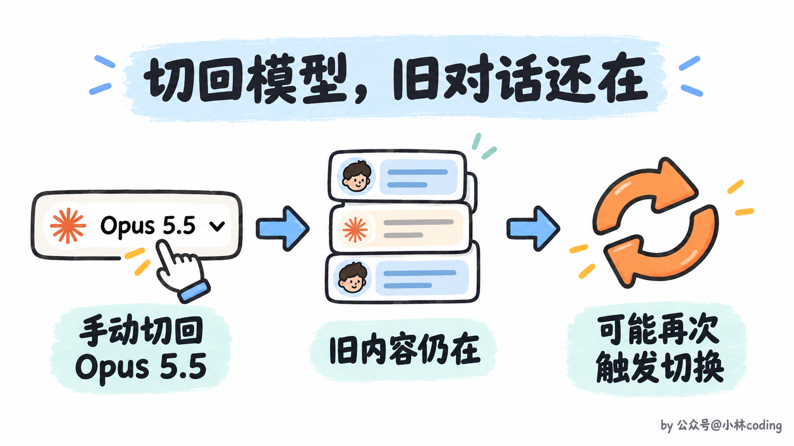
切回模型不会清空旧对话，仍可能再次触发切换
如果希望换模型前先征求你的意见，可以到 Settings → Capabilities，关闭「Switch models when a message is flagged」。这样遇到原本会自动换模型的情况，对话会先暂停，让你决定接下来怎么办。
在 Claude Code 里，想切回模型，就用 /model。如果需要修改上一条消息，连按两次 Esc。
自动切换的偏好可以到 /config 里调整。如果觉得这次是误判，再用 /feedback 反馈。
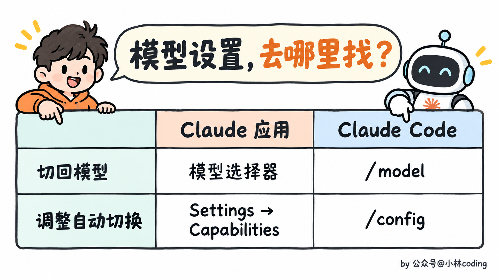
Claude 应用和 Claude Code 的模型设置入口对照
手册在这里还提到，要求模型逐字公开内部思考过程，也可能触发安全标记或被拒绝。如果提示词或保存的指令里有这类要求，也顺手删掉。
那我只是想知道，Claude 为什么选了这个方案，还能问吗？当然可以。直接问取舍和证据，比如「这个方案比另外一个好在哪里，你的判断依据是什么」。
六、等回复太慢，能不能快一点？
如果你正在 Claude Code 里来回调代码，每轮都坐在屏幕前等回复，可以试试 /fast。
看到「快速模式」，你可能先想到，是不是换了个更轻量的模型？
手册说，用的还是同一个模型。不过，速度快了，费用也会更高。目前这个功能处于研究预览，需要开启「额外用量」，同样的 token，用快速模式会更贵。
那值不值得开？你一直在旁边等着，少等一会可能就值。任务交出去以后，你本来就要去忙别的，那也不用急着开。
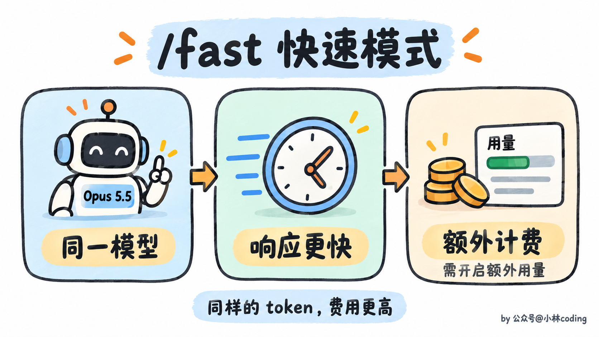
快速模式使用同一模型，响应更快但费用更高
最后，一份使用检查清单
下次开长任务前，可以顺手过一遍。
- 提需求，写清完成标准，清理提示词和固定指令里多余的思考叮嘱，图表直接附上，设计偏好说具体。
- 跑任务，约定继续和暂停的条件，保留危险操作确认，大任务按需分工，清单及时更新。
- 看结果，先处理等你决定的事，再看审查证据和未确认的信息。
- 看设置，知道当前用了哪个模型，按自己的习惯设置自动切换。
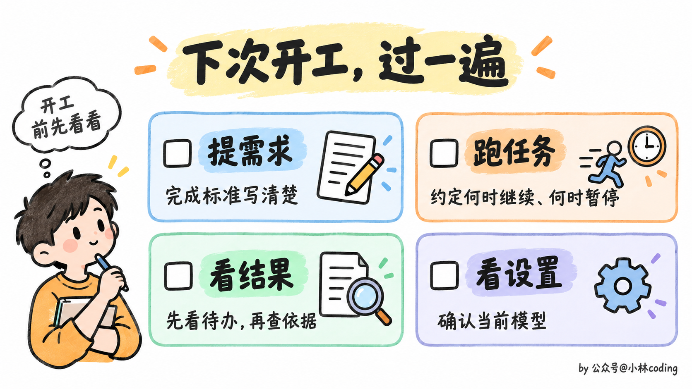
开始长任务前的四项检查清单
看完先别急着收藏吃灰，找一个最近让你反复催「继续」的任务试试。
把怎样算做完、什么情况需要停下来问你补清楚，再跑一轮。最后看看，中途少了几次无意义的停顿，交上来的结果是不是更容易检查。哪条建议对你有用，拿自己的任务试过，比记住整份手册更有感觉。
参考文章